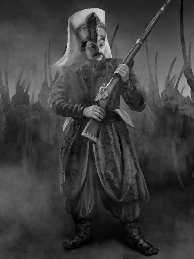

Османская империия. XXI век.
|  |
Описание товара
VR-Event из раздела «Альтернативная история» с использованием камеры сенсорной депривации и импрегнации сензитивных ощущений |
| КУПИТЬ! |
Характеристики товара
| Статус Ивентодержателя | Сложность | |||
| Категории | Neophit | Prozelit | Adept | Легкая |
| Продолжительность | 1-3 месяца | 3-6 месяцев | 6-12 месяцев | |
| Начальный статут | Проходимец | Начальник наемников | Придворный интриган | |
| Место квеста | ВиртуаРеальность | |||
- Продолжительность: 1 день в реальности = 3 года в VR.
- Место квеста: Лаборатория ментальных импрегнаций клуба/Весь мир
- Сложность: лёгкая.
Подробное описание товара
Алтернативная история, а что будет если... Отправной точкой служит экспансия и развитие Османской империи без упадка.
Удивительное сочетание красивейших нарядов и фантастического оружия (бластеры, гравиколесницы, нейролуки)
Совершенно открытый мир в VR, сценарии развития событий непредсказуемы, генерируются нейронной сетью Riflesia
Импрегнация сензитивных переживаний осуществляется после прохождения камеры сенсорной депривации на пике возникающих галлюцинаций.
Полное погружение, за счет чего физическое время расстягивается в виртуальном мире в разы. 8 часов в сензокостюме = 365 дней в виртуальности (1 год)
Начальная комплектация исходных материалов и стартового статуса зависит от статуса Ивентодержателя в клубе.
Обратите внимание! Необходима первичная подготовка для управления сензокостюмом и импрегнации ощущений.
Условия доставки
Ивентодержатель для сохранения тайны местонахождения Лаборатории:
- должен сдать все гаджеты и электронные устройства, определяющие местоположение
- может быть обследован на наличие вживленных устройств слежения
Обеспечение безопасности
Ивентоисполнитель обеспечивает безопасность игрока снабдив место Ивента и Ивентодержателя следующими устройствами:
- Ракетница с сигналами зеленого цвета
- Ракетница с сигналами красного цвета
- Кнопка экстренного «извлечения»
Для сохранения аутентичности происходящего, данные объекты являются неизвлекаемыми и неотделяемыми от инвентаря Ивентодержателя в любое время и не занимают активных ячеек.